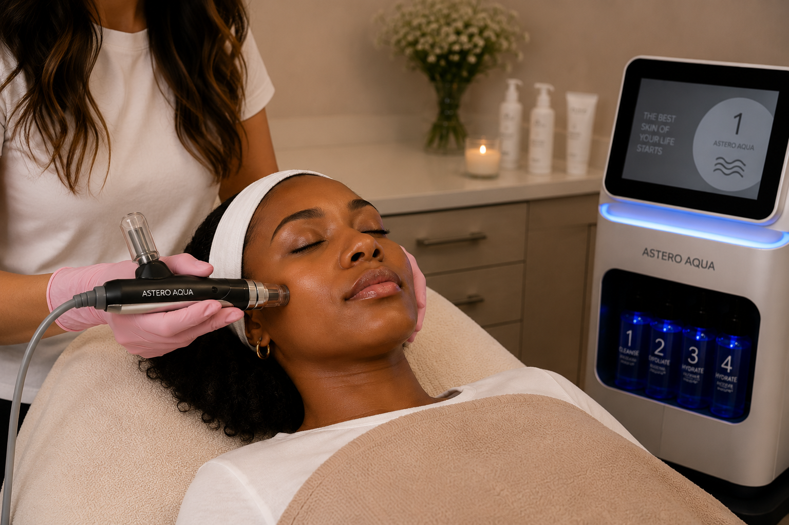
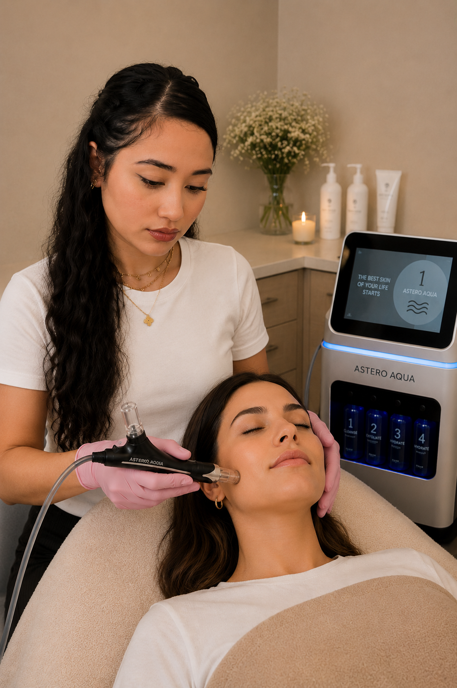

Heldere uitstraling
Hydraterende en verzorgende formules kunnen droogte en dofheid minder zichtbaar maken, waardoor de huid direct frisser en meer luminous kan ogen.

BB Glow Tone UP is een cosmetische behandeling die zich specifiek richt op een doffe, ongelijkmatig ogende teint. Afhankelijk van het gebruikte protocol worden hydraterende, brightening- en eventueel subtiel tone-correcting serums gecombineerd met nano-infusion of een gecontroleerde needlingtechniek.
Bij needling ontstaan zeer kleine, gecontroleerde microkanaaltjes in de huidbarrière; bij oppervlakkige nano-infusion blijft de behandeling juist veel oppervlakkiger. Welke techniek wordt gebruikt, bepaalt dus mede wat de behandeling daadwerkelijk doet. Tone-up formules bevatten vaak verzorgende of cosmetisch verhelderende ingrediënten die de huid frisser en gelijkmatiger kunnen laten ogen.
Het doel is een helderdere, verzorgde en optisch gelijkmatigere uitstraling — niet het permanent lichter maken van de natuurlijke huidskleur. Het zichtbare effect kan deels komen door hydratatie, lichtreflectie, vermindering van dofheid en, afhankelijk van de formule, tijdelijke tone-correcting pigmenten of brightening-ingrediënten.
Hydraterende en verzorgende formules kunnen droogte en dofheid minder zichtbaar maken, waardoor de huid direct frisser en meer luminous kan ogen.
Tone-up protocollen zijn gericht op het verzachten van een vaal of ongelijkmatig huidbeeld. Afhankelijk van het serum kan dit effect afkomstig zijn van brightening-ingrediënten, subtiele kleurcorrectie, hydratatie of lichtreflecterende bestanddelen.
Wanneer echte microneedling onderdeel is van het protocol, veroorzaakt dit gecontroleerde microprikkels die huidherstelprocessen kunnen activeren. Bij oppervlakkige nano-infusion ligt de nadruk meer op cosmetische productapplicatie dan op diepe huidremodellering.

Het behandelprotocol wordt afgestemd op jouw huidconditie, gevoeligheid en gewenste tone-up effect. Omdat BB Glow Tone UP geen uniform medisch protocol is, zijn productkeuze, hygiëne en de gebruikte techniek extra belangrijk.
Make-up, SPF, talg en oppervlakkige vervuiling worden verwijderd. Daarna beoordelen we onder andere dofheid, zichtbare kleurverschillen, hydratatie en gevoeligheid.
Op basis van de huid kiezen we een passende verzorgende tone-up formule. Afhankelijk van het protocol kan deze bijvoorbeeld hydraterende, antioxidant- of cosmetisch verhelderende ingrediënten bevatten.
De gekozen techniek wordt gecontroleerd over de huid toegepast. Bij microneedling ontstaan microkanaaltjes; bij nano-infusion blijft de behandeling oppervlakkiger. De methode moet passen bij het product en de huidconditie.
De tone-up verzorging wordt gelijkmatig toegepast met focus op hydratatie, helderheid en een optisch gelijkmatige teint. Het directe resultaat kan subtiel zijn en is afhankelijk van huidconditie en gebruikte formule.
We sluiten af met kalmerende verzorging, zeker bij een behandeling die op teint en glanzende huid is gericht, is koeling belangrijk na de behandeling.
BB Glow Tone UP kan passen wanneer je vooral een doffe, vermoeide of optisch ongelijkmatige teint wilt opfrissen en je huid geschikt is voor het gekozen protocol. Bij actieve ontstekingen, infecties, beschadigde huidbarrière of bepaalde pigmentstoornissen kan een andere aanpak geschikter zijn.
“BB Glow Tone UP” is geen gestandaardiseerde medische behandelnaam. Protocollen verschillen in apparaat, naalddiepte en gebruikte brightening- of tone-correcting serums. De wetenschap ondersteunt afzonderlijke principes zoals microneedling en bepaalde topische ingrediënten, maar dat is niet hetzelfde als bewijs dat iedere BB Glow Tone UP-formule de huid langdurig of permanent lichter maakt.
Huidkleur wordt onder andere bepaald door melanine en de verdeling daarvan in de epidermis. Topische ingrediënten zoals niacinamide zijn onderzocht op zichtbare hyperpigmentatie. Wanneer microneedling wordt gebruikt, verandert bovendien tijdelijk de barrièrefunctie van de huid en kan de penetratie van stoffen toenemen.
Klinische studies naar bijvoorbeeld niacinamide laten zien dat bepaalde formules zichtbare hyperpigmentatie kunnen verminderen bij herhaald topisch gebruik. Los daarvan is microneedling onderzocht als techniek die gecontroleerde microkanaaltjes creëert en huidherstel kan activeren.
Onderzoek ondersteunt dat bepaalde topische ingrediënten bij consequent gebruik invloed kunnen hebben op het uiterlijk van hyperpigmentatie, maar dat zegt niets over een onmiddellijke of permanente verandering van de natuurlijke huidskleur. De FDA benadrukt bovendien dat microneedling-apparaten niet zijn goedgekeurd voor het afleveren van cosmetica of topicale producten in de huid. Daarom moeten claims over BB Glow Tone UP voorzichtig en productspecifiek blijven.
BB Glow Tone UP is geen gestandaardiseerde wetenschappelijke behandelnaam. Apparaten, naalddiepte en gebruikte brightening- of tone-correcting formules verschillen sterk. Onderzoek naar bijvoorbeeld niacinamide betreft specifieke topische concentraties en gebruiksduur en kan daarom niet automatisch worden vertaald naar ieder Tone UP-serum. De FDA vermeldt daarnaast dat microneedling-apparaten niet zijn goedgekeurd voor het afleveren van cosmetica of andere topicale producten in de huid. De behandeling moet daarom niet worden gepresenteerd als gegarandeerde of permanente skin-lightening.